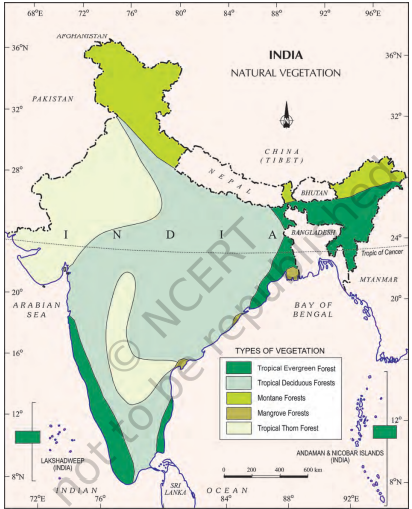
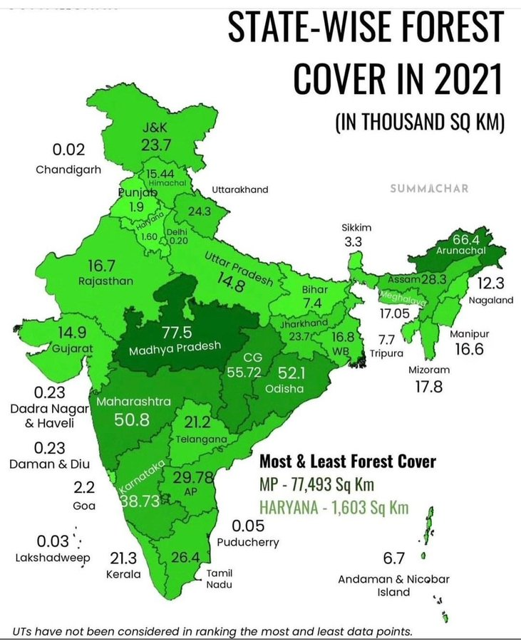

29 Natural Vegetation Of India
Natural Vegetation of India
India is bestowed with a wide range of flora and fauna. Due to diverse geographical and climatic conditions, an extensive range of natural vegetation grows in India.
Types of Natural Vegetation in India
1. Tropical Evergreen Rain Forests 2. Deciduous or Monsoon Type of Forests 3. Dry Deciduous Forests 4. Mountain Forests 5. Tidal or Mangrove Forests 6. Semi-Desert and Desert Vegetation

Tropical Evergreen Rainforests
| Precipitation | More than 200 cm |
|---|---|
| Location | Northeastern regions: Arunachal Pradesh, Meghalaya, Assam, Nagaland; Western Ghats; Tarai areas of the Himalayas; Andaman Islands; Hills of Khasi and Jaintia. |
| Key Trees | Sandalwood, Rosewood, Garjan, Mahogany, Bamboo |
| Vegetation Structure | Multilayered: Includes trees, shrubs, and creepers |
| Common Animals | Elephants, Monkeys, Lemurs |
Deciduous or Monsoon Type of Forests
| Precipitation | 100 cm to 200 cm |
|---|---|
| Locations | Lower slopes of the Himalayas, West Bengal, Chhattisgarh, Bihar, Orissa, Karnataka, Maharashtra, Jharkhand, and adjoining areas. |
| Key Trees | Teak (dominant), Deodar, Blue Gum, Pal Ash, Sal, Sandalwood, Ebony, Arjun, Khair, Bamboo |
| Characteristics | Trees shed leaves during dry winter and dry summer |
| Types | Divided into moist and dry deciduous based on water availability |
Moist Deciduous and Dry Deciduous forests:
| Precipitation | 100 cm to 200 cm | 70 cm to 100 cm |
|---|---|---|
| Locations | Eastern slopes of the Western Ghats, Chhattisgarh, Orissa, Eastern Uttar Pradesh | Central India, rain-shadow regions of the Western Ghats, parts of Maharashtra, Madhya Pradesh, Tamil Nadu |
| Key Trees | Teak, Sal, Shisham, Mango, Arjun, Mahua, Bamboo | Teak, Sal, Khair, Axlewood, Banyan, Bel, Palash, Tendu, Neem |
| Characteristics | ● Trees shed leaves for a short period in dry season ● Denser and more lush vegetation | ● Trees shed leaves completely in dry season ● More open and less dense forest cover |
| Adaptations | Adapted to areas with moderate rainfall and a short dry season | Adapted to areas with long dry seasons and scarce water availability |
Mountain Forests
Location Found in mountainous regions (e.g., Himalayas)
| Vegetation by Elevation | ● Up to 1500 meters (foothills): Evergreen trees like Sal, Teak, Bamboo ● Higher slopes: Temperate conifers like Pine, Fir, Oak ● Higher elevations: Rhododendrons, Junipers ● Above these zones: Alpine grasslands up to the snowfei ld |
|---|---|
| Characteristics | Vegetation changes with elevation, from evergreen on lower slopes to coniferous trees and then alpine grasslands at higher altitudes |
Tidal or Mangrove Forests
| Location | Found along the coast and deltas of major rivers (e.g., Cauvery, Krishna, Mahanadi, Godavari, Ganga) |
|---|---|
| Special Region | Known as ‘Sundarbans’ in West Bengal |
| Key Trees | Sundari (major tree), Hogla, Garan, Pasur |
| Economic Importance | Provides timber and friewood, important for the timber industry |
| Coastal Vegetation | Palm and coconut trees beautify the coastal strip |
Semi-Desert and Desert Vegetation
| Precipitation | Less than 50 cm |
|---|---|
| Locations | Parts of Gujarat, Punjab, Rajasthan |
| Key Plants | Thorny bushes, Acacia, Babul, Indian Wild Date |
| Adaptations | ● Long roots and thick fel sh ● Plants store water in stems to survive drought |
| Characteristics | Drought-resistant vegetation, adapted to arid and semi-arid conditions |
Forest Conservation
Forests play a crucial role in the environment and support life by providing direct and indirect benefits to the economy and society. The conservation of forests is vital for the survival and prosperity of humankind.
Evolution of Forest Policy in India
1952: First national forest policy adopted by the Government of India. 1988: Forest policy revised, emphasizing sustainable forest management.
Key Objectives of the 1988 Forest Policy:
Bringing 33 percent of the geographical areas under forest cover. Maintaining environmental stability and restoring forests where ecological balance was disturbed. Conserving the natural heritage of the country, its biological diversity, and its genetic pool. Checking soil erosion, preventing the extension of desert lands, and reducing floods and droughts. Increasing the forest cover through social forestry and afforestation on degraded land. Increasing the productivity of forests to make timber, fuel, fodder, and food available to rural populations dependent on forests, and encouraging the substitution of wood. Creating a massive people's movement, involving women, to encourage the planting of trees, stop the felling of trees, and reduce pressure on existing forests.
